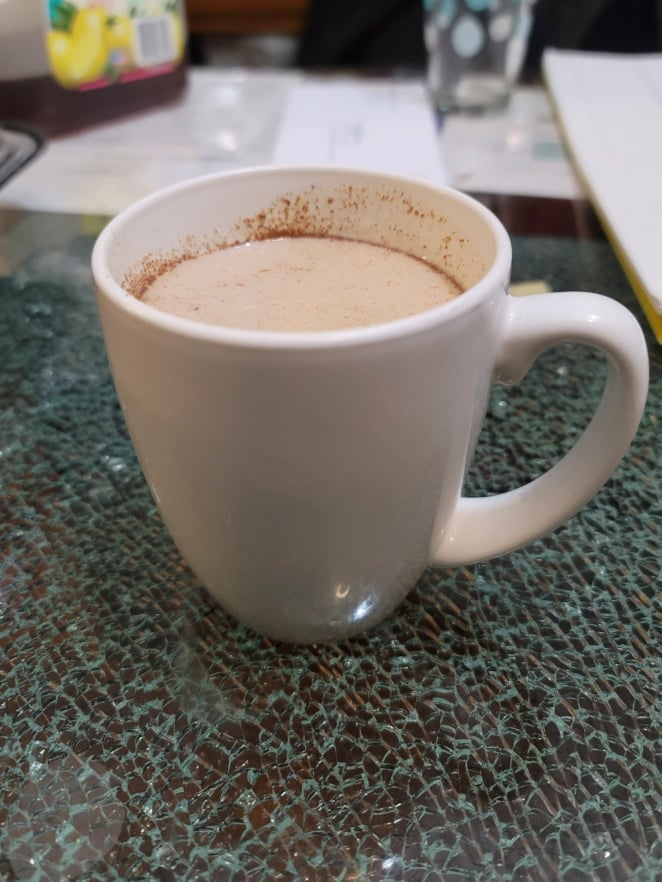

Pumpkin Spice Latte

Ingredients:
- 2 cups Milk
- 2 tbsp Pumpkin puree
- 1-3 tbsp Sugar, or to taste
- 1 tbsp Vanilla extract
- 1/2 tsp Pumpkin pie spice
- 1/2 cup Strong coffee
- Optional: Whip cream
Instructions:
- Place the milk, pumpkin puree, and sugar into a saucepan and heat over medium. Let get to right before boiling and then remove from heat.
- Whisk in the vanilla extract, pumpkin pie spice, and coffee. Pour into mugs and optionally top with whip cream.